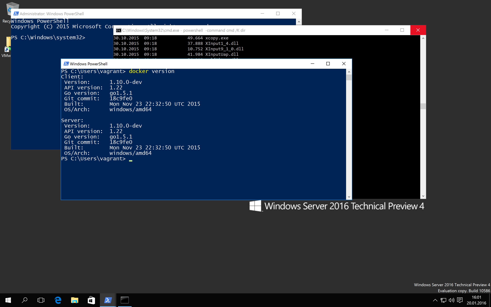
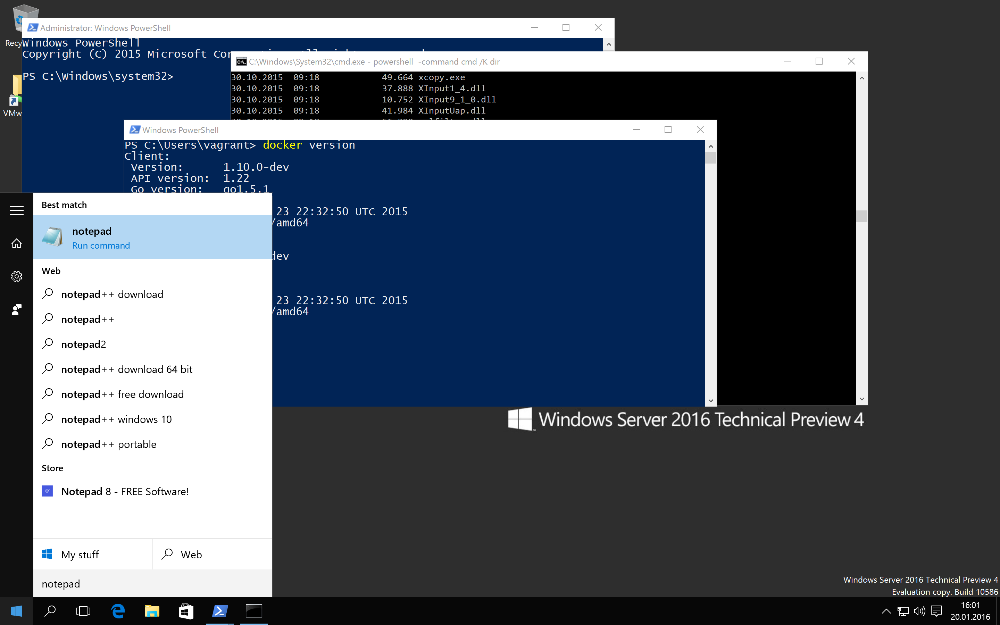
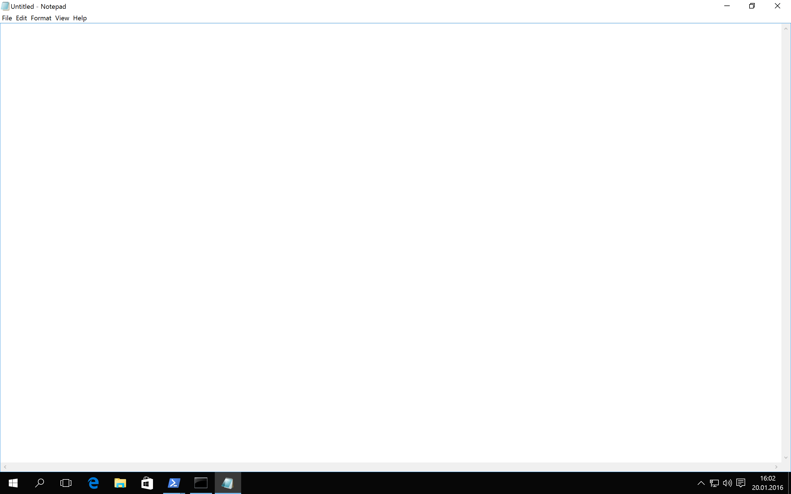
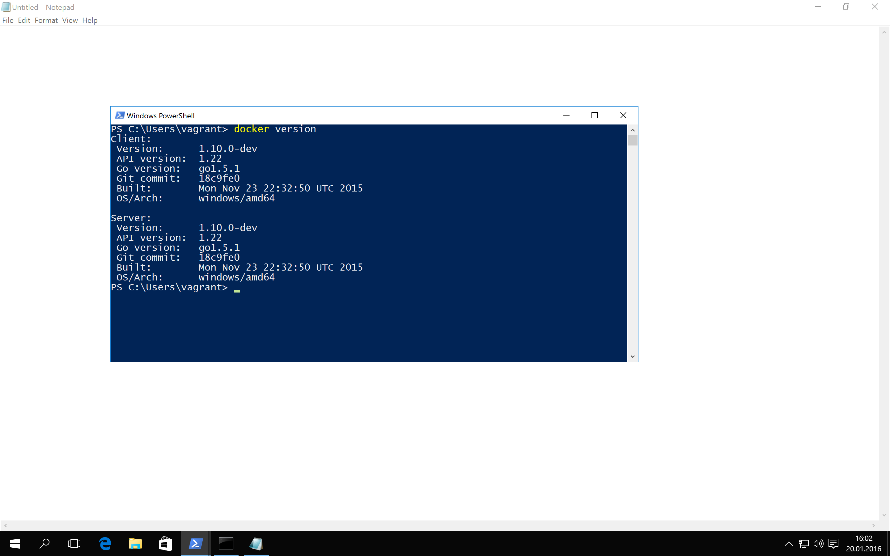
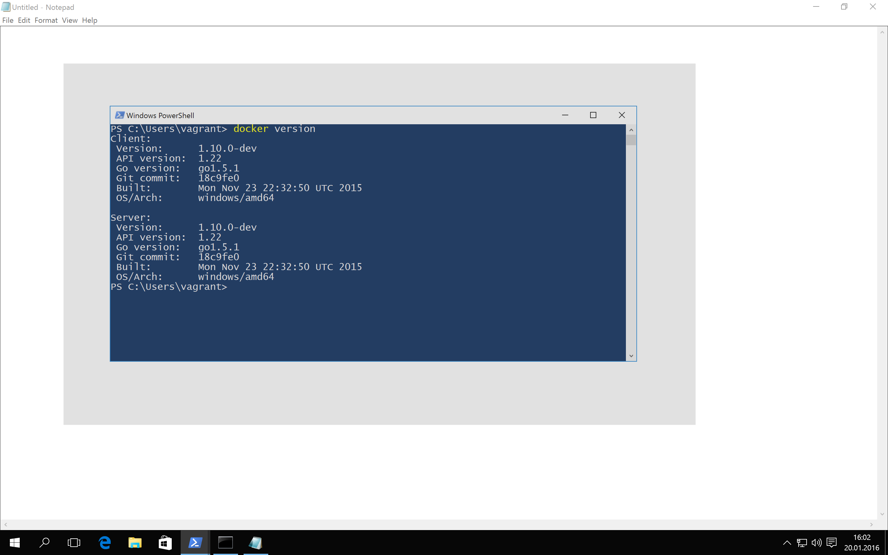
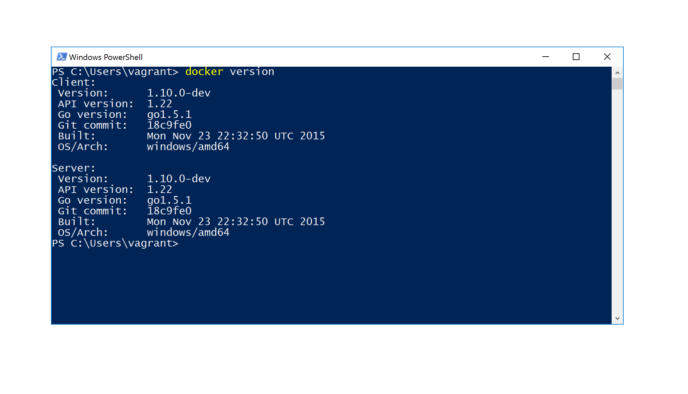
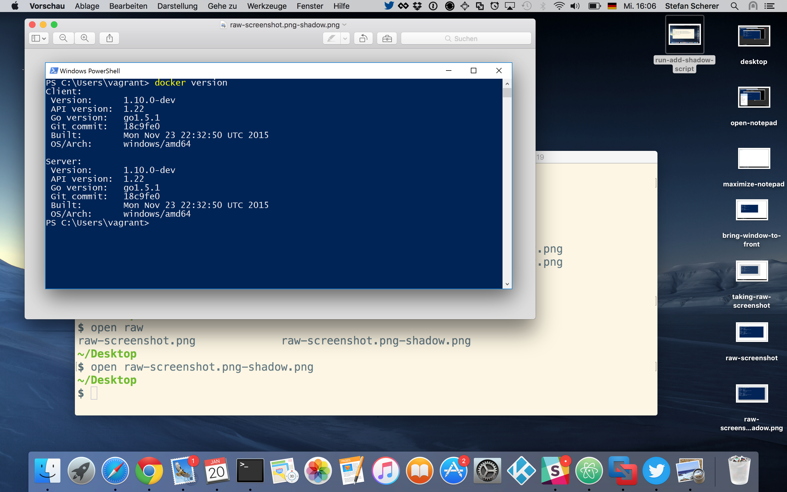
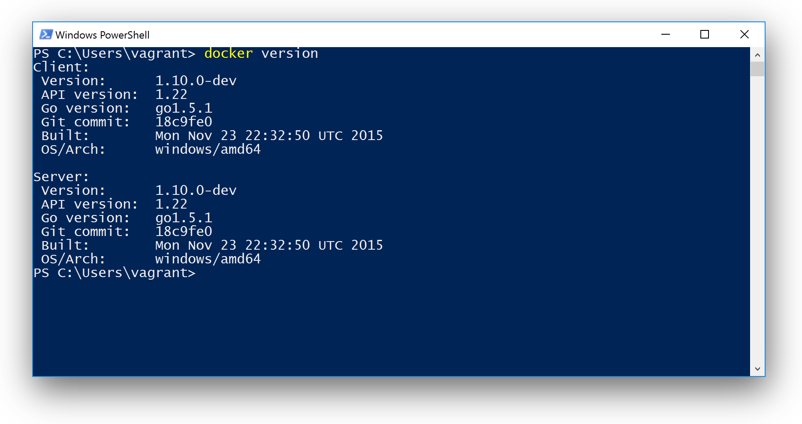

How to take Windows screenshots with drop shadow
In my last blog post I showed the Chocolatey experience - a package manager for Windows. But some of you had a closer look and were "disturbed" by the screenshot taken. It shows a Safari Browser on OSX. What? But you're talking about Windows.
That's because I'm on Mac since nearly two years, but I still have a strong connection to Windows and contribute some Chocolatey packages from time to time to make life easier working on Windows.
Mac OSX
Taking screenshots of a window on OSX works right out of the box. You just press cmd ⌘ + 4 and then press space to select the current window and then press your touch pad to take the photo. And you will get a nice screenshot with a drop shadow. Done!
Windows
When it comes to take screenshots of let's say a Powershell terminal for one of my Windows 2016 TP4 blog posts I struggled with it.
Here is my recipe to minimize the effort taking nice screenshots of a window that is running in a Windows VM on my Mac.
That PowerShell terminal looks interesting. So how to extract it from the whole desktop?

First open Notepad from the start menu

Then maximize the Notepad window to have a big white background. PS: I also searched for a white web page in the internet, but always found "white" pages with lot's of ads on it. So Notepad is your tool here.

Bring back your window up to the front and in place. There should be some white border around it. If your Windows has Aero or other effects you should already see some kind of shadow. Just take a photo and your're done. On Windows 10 / 2016 there is no effect, at least in my Vagrant boxes.

As I'm working on a Mac, I now just use the OSX keyboard shortcut cmd ⌘ + 4 and select a rectangle around the window, no matter how much of the white area I have selected.

The screenshot taken now has a lot of white border in it:

On my Mac I have ImageMagick installed with brew install imagemagick and this little bash script add-shadow to do the trick: Trimming the white border and adding a drop shadow.

The bash script add-shadow is more or less only a one-liner:
#!/bin/bash
convert "$1" -trim \( +clone -background grey25 -shadow 80x40+5+30 \) +swap -background transparent -layers merge +repage "$1-shadow.png"
Run the script with the filename of the image you want to improve.
The new image now has a transparent drop shadow around the window without the white border.

And this is the resulting Windows PowerShell terminal with the drop shadow in a blog post.

This little script now saves me much time for upcoming blog posts. And I promise, I'll do some more Windows screenshots in the future...